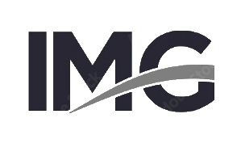

Nos reiremos de esto
La página de este proyecto + tienda virtual ha sido uno de nuestros descubrimientos favoritos de los últimos meses, ya que se aparta del diseño tradicional: usa un fondo oscuro y una tipografía increíble de color claro.


Soy un trabajador con experiencia que busca mejores oportunidades para crecer de forma personal y profesional para alcanzar un éxito común.
La página de este proyecto + tienda virtual ha sido uno de nuestros descubrimientos favoritos de los últimos meses, ya que se aparta del diseño tradicional: usa un fondo oscuro y una tipografía increíble de color claro.
Página como una demostración completa sobre cómo codificar un sitio web. El suyo comienza como una página en blanco y termina como un sitio totalmente interactivo donde los visitantes pueden apreciar la manera en que realiza su trabajo.